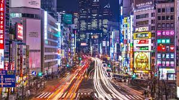

Tokyo (/ˈtoʊkioʊ/;[7] Japanese: 東京, Tōkyō [toːkʲoː] (audio speaker iconlisten)), historically Tokio and officially the Tokyo Metropolis (東京都, Tōkyō-to), is the capital[8] and largest city of Japan. Its metropolitan area is the most populous in the world,[5] with an estimated 37.468 million residents in 2018. Located at the head of Tokyo Bay, the prefecture forms part of the Kantō region on the central Pacific coast of Japan's main island of Honshu. Tokyo is the political and economic center of the country, as well as the seat of the Emperor of Japan and the national government. As of 2021, the prefecture has an estimated population of 14.04 million.[4]
